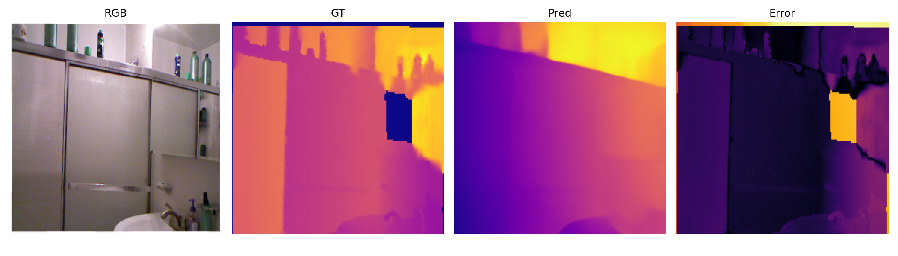
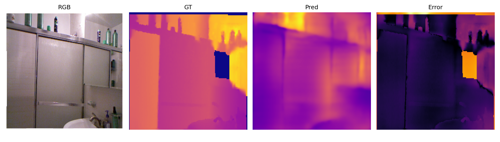
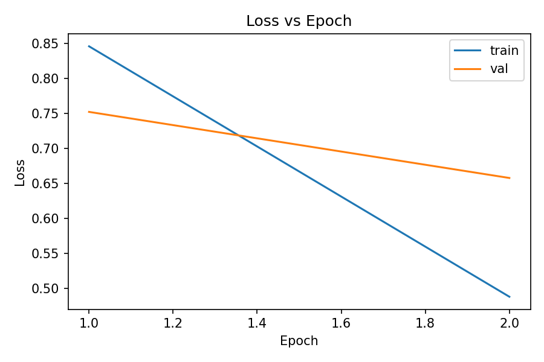
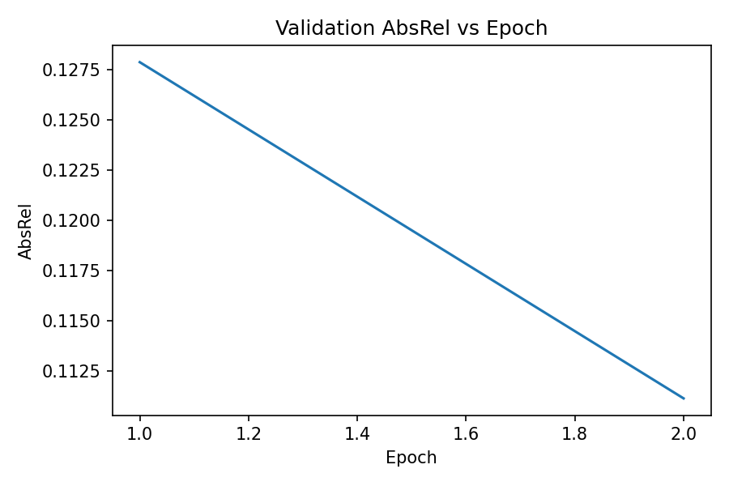
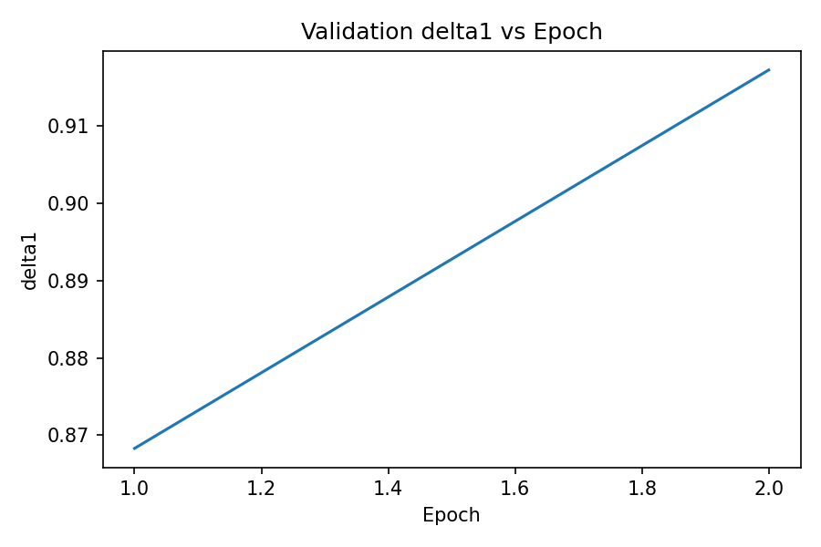
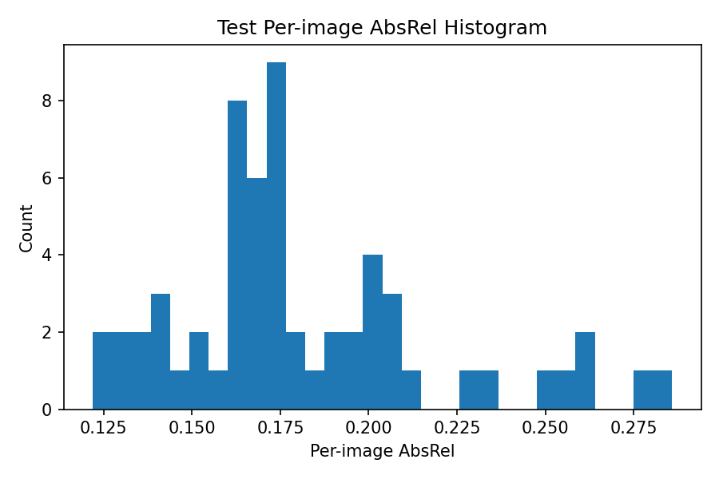

Paper story preserved
The repo keeps the original presentation’s structure: relative depth reasoning, Depth Anything Small, NYU-v2 evaluation, and an optional pseudo-label self-training extension.
This page turns the original presentation into a concrete project view: what was built, what was tested, what the outputs look like, and what the completed proof-of-concept actually measured on NYU-v2 and KITTI Tiny.
The repo keeps the original presentation’s structure: relative depth reasoning, Depth Anything Small, NYU-v2 evaluation, and an optional pseudo-label self-training extension.
The implementation is sized for an RTX 3050 4GB system, which means conservative image size, conservative batch size, and a lean training loop instead of a paper-scale reproduction.
The project is in GitHub, the environment is installed, the checkpoint loads, and a small curated set of real result images is now versioned in the docs.
https://github.com/arassal/depth-projectThese are the actual test results from the completed NYU-v2 subset proof-of-concept run.
Each saved panel is organized as RGB | GT | Pred | Error. The main question is whether the model preserves the large scene layout and the near-versus-far ordering, not whether it produces exact real-world distance in meters from a single photo.








cd /home/alexander/depth-project source .venv/bin/activate python src/prepare_nyu_v2.py \ --root /home/alexander/depth-project/data/nyu_v2 \ --val-count 512 python src/train.py --config configs/baseline.yaml python src/eval.py --config configs/baseline.yaml \ --checkpoint checkpoints/baseline_best.pt python src/plots.py \ --metrics-log outputs/metrics/baseline_history.jsonl \ --per-image outputs/metrics/baseline_test_per_image.csv \ --output-dir outputs/plots/baseline
KITTI Tiny is included as a zero-shot outdoor driving demo to show that the pretrained model is not locked to indoor scenes.


You can run a live local web app that accepts any uploaded image and generates a depth map with the pretrained model.
cd /home/alexander/depth-project source .venv/bin/activate python src/demo_web_app.py
Then open http://127.0.0.1:8000 in the browser.
outputs/web_demo/